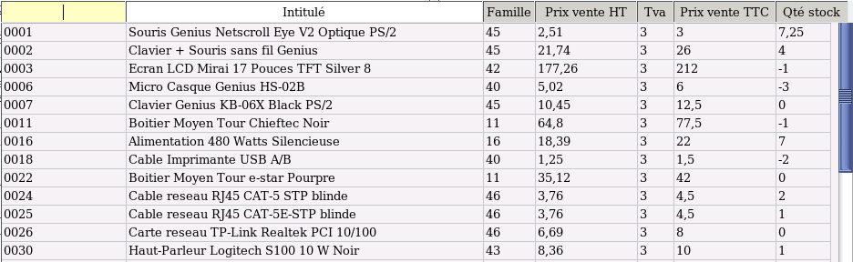

~ Laurux.Pos ~

~ Laurux.Pos ~ |
|
|
|
Recherche d'un produit.
On fait F2 pour ouvrir la fenêtre de recherche.

L'écran de recherche se divise en deux parties. La partie haute permet de filtrer ses recherches par le code du produit ou sa désignation. La partie basse est la zone d'affichage des produits.Pour sélectionner un produit on peut cliquer dessus mais on peut aussi descendre avec la flèche vers le bas jusqu'à la ligne souhaitée puis valider.
----------------------------------------------------------------------------------------------------------------------